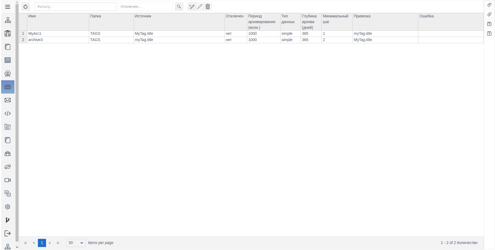
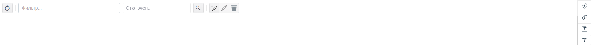
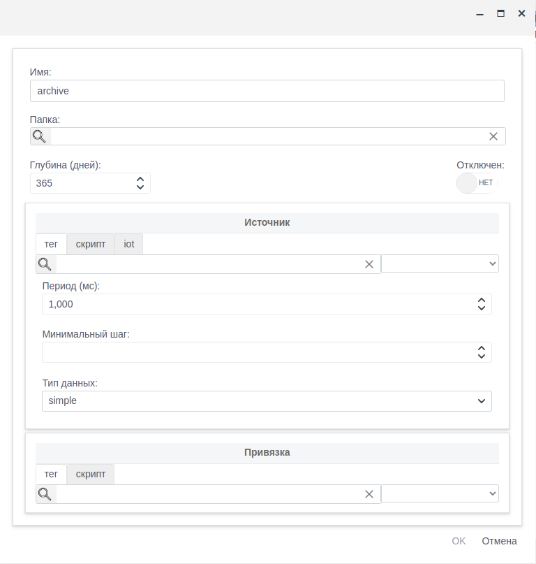

Архив в IIoT-платформе - это механизм, который предназначен для хранения исторических данных о параметрах и событиях, собранных и записанных в системе. Эти данные могут включать в себя временные ряды измерений (например, температура, давление, расход), записи о событиях (например, аварии, предупреждения), а также другие информационные элементы, необходимые для анализа производственных процессов и принятия управленческих решений.
В Faceplate редактор Архивы представляет собой подсистему для хранения данных, поступающих из внешних источников через интерфейсы платформы, такие как, PLC-соединения, IoT-соединения, результат работы скриптов через API Faceplate и т.д.
Созданные архивы могут быть эффективно использованы инженерами и операторами для анализа, управления и мониторинга производственными процессами на основе исторических данных и представлены в виде графиков и отчетов.
Архив в IIoT-платформе обладает следующими характеристиками:
Хранение данных: Он сохраняет данные в течение определенного времени, что позволяет анализировать исторические тренды и обнаруживать изменения в производственных процессах.
Сжатие данных: Часто архивы используют методы сжатия данных для экономии места на диске и оптимизации производительности системы.
Поиск и доступ к данным: Пользователи могут осуществлять поиск и получение доступа к историческим данным для анализа или использования в отчетах и графиках.
Защита данных: Важным аспектом является обеспечение безопасности данных в архиве, чтобы они оставались целостными и защищенными от несанкционированного доступа или изменений.
Развертывание и интеграция: Архивы данных могут быть развернуты как локально, так и удаленно, в зависимости от требований системы. Они также часто интегрируются с другими системами анализа данных для более глубокого и широкого анализа производственных процессов.
Редактор “Архивы” позволяет работать с архивируемыми параметрами, создавать (??????????) новые архивы, производить их настройки, редактировать и удалять созданные ранее. Значения параметров архивируются циклически, через заданные пользователем интервалы времени, вне зависимости от величины и скорости изменения данной переменных.
На главной панели редактора можно увидеть базу архивов:

Для работы с базой архивов используется панель управления:

где:
Элемент
Описание
Кнопка обновления списка архивов. Если над проектом одновременно работают несколько разработчиков кнопка может служить для получения обновлений, выполненных другими.
Функция фильтрации. Первое поле - поисковая строка; второе поле указывает, нужно ли использовать значение из поисковой строки для фильтра (Да/Нет); третий элемент - кнопка активации функции фильтрации или проверки отключения.
Кнопка экспорта базы архивируемых параметров в .xlsx файл.
Кнопка импорта базы архивируемых параметров из .xlsx файла.
Кнопка экспорта проекта в файл.
Кнопка импорта проекта в файл.
Создание (???????????????) и редактирование архивов
Создание новых архивов или редактирование настроек уже существующих выполняется с помощью формы:

Значение параметра архивируется с заданной периодичностью. ВНИМАНИЕ! Изменение данного параметра может существенно отражаться на требованиях к аппаратному обеспечению сервера Faceplate. Уменьшение данного параметра ведет к увеличению нагрузки на ЦПУ, а также объему дискового пространства требуемому для хранения архивов.
Длина хранимой истории изменений параметра в днях. Минимальное значение - 1 день, максимальное значение не ограничено. При конфигурировании глубины архивов необходимо учитывать свободное пространство на дисках сервера. Архив 1-го параметра периодичностью 1 сек. глубиной в 1 месяц занимает в среднем 20 MB.
где:
Элемент
Описание
Имя:
В поле нужно написать имя архива. Обычно рекомендуется давать имена, связанные с содержимым архива. Например, “Давление в скважине”). В ходе работы имя архива будет отражаться в окне Трендов (добавить ссылку!!!!). И по названию архива оператору должно быть понятно с каким графиком он работает. Имя должно быть уникальным в рамках проекта.
Папка:
В этом поле нужно прописать месторасположение будущего архива. Можно воспользоваться кнопкой поиска рядом и выбрать место, где будет храниться архив в текущем проекте.
Глубина (дней):
Здесь устанавливается длительность хранения данных архива. Минимальное значение - 1 день, максимальное значение не ограничено. При конфигурировании глубины архива необходимо учитывать свободное пространство на дисках сервера. Архив периодичностью 1 сек. глубиной в 1 месяц занимает около 20 MB.
Отключен:
Этот переключатель позволяет определить состояние архива включен/отключен, т.е. происходит ли запись данных в архив или нет. Настройка позволяет отключить архивирование параметра в режиме исполнения.
Источник
Данные для хранения в архиве могут быть получены из 3-х источников:
-тег - в качестве архивируемого параметра выступает значение поле тега (Ссылка!!!!!);
-script - позволяет определить скрипт, который может быть использован для дополнительной обработки архивируемого значения или формированию значения архива по нескольким входным параметрам. Например, в архиве можно хранить среднее значение нескольких точек измерения (Ссылка!!!!!);
-iot - выбор IoT-привязки (Ссылка!!!!!!).
Период (мс):
В этом поле нужно задать периодичность (частоту) записи значений выбранных данных в архив. Минимальное значение - 10 мс, максимальное значение - 3600000 мс.
Минимальный шаг
Это поле позволяет установить минимальную разницу по значению между предыдущим и текущим значениями параметра. Это означает, что система будет писать в архив новое значение, только если оно отличается от предыдущего на величину превосходящую или равную значению минимального шага.
Например, если в канале измерения наблюдается помеха, то в некоторых случаях приемлемо задать минимальный шаг изменения равный средней амплитуде помехи. Это позволит отражать в архиве только устойчивую тенденцию изменения параметра, не учитывая кратковременные незначительные отклонения. Задание данного параметра может существенно снизить нагрузку на ресурсы Faceplate.
Тип данных
В этом поле можно выбрать тип архива: simple, categorized или counter:
-simple - основной тип, подходит для хранения параметров, которые постоянно меняют свои значения (например, давление, температура и др.);
-categorized - тип, когда в архиве цифровым кодом представлено состояние объекта (например, состояние “0” - агрегат остановлен, состояние “1” - агрегат работает, “2” - состояние ошибки и т.д.);
-counter - тип, когда в архиве значение параметра представлено как разница между предыдущим и текущим значениями (например, разница в показаниях счетчика в момент времени t0 и t1).
Привязка
Привязками могут быть:
тег: система архивирования считывает значения из поля тега, к которому привязана объявленная переменная, и сохраняет их в архиве.
script: позволяет выполнять дополнительную обработку архивируемого значения (например, вычисление среднего по нескольким точкам измерения) и вычислять значения архива по нескольким входным параметрам (например, сумма показаний нескольких расходомеров); возвращаемые из скрипта значения, сохраняются в базе архивов. (Ссылка).
Таким образом, созданные архивы будут представлены в следующем виде:
Рисунок!!!!!!!!!!!
В случае возникновения любых ошибок, связанных с архивом, будет заполнен столбец “Ошибка”.
Следует выбрать один из двух языков программирования скрипта - erlang или javascript. Далее необходимо ввести переменную и выбрать источник значений показателя для скрипта.
Пример скрипта для вычисления скользящего среднего по последним 10 значениям для erlang:
Пример скрипта для вычисления скользящего среднего по последним 10 значениям для javascript:
Для компиляции скрипта необходимо нажать кнопку:
Если компиляция выполнена без ошибок, то напротив кнопки компиляции появится надпись “ok”, иначе будет выведен список ошибок, например:
Общий принцип работы:
Система архивирования считывает значения из полей тегов, к которым привязаны объявленные переменные.
Выполняется вызов скрипта с передачей на вход map со значениями переменных.
Сохранение в базу архивов значений переменных, возвращаемых из скрипта.
Экспорт/Импорт конфигурации архивов
База архивируемых параметров может быть выгружена в .xlsx файл - кнопка “Экспорт” в редакторе архивов (см. Описание интерфейса редактора архивов). В результате браузер загрузит файл с базой архивируемых параметров - ARCHIVES.xlsx. Просмотр и редактирование файла выполняется с помощью табличных редакторов, поддерживающих формат .xlsx .
База архивируемых параметров от источников тег или script имеет следующий вид:
Каждая строка соответствует одному архивируемому параметру и имеет следующий набор полей:
В файле можно добавить или отредактировать строки. Сохранение нужно делать в том же формате .xlsx.
Файл можно импортировать обратно в проект, в результате чего внесенные изменения будут загружены в базу. Также механизм экспорта/импорта позволяет переносить настройки между проектами, например с тестового сервера или станции разработчика на боевой проект. Для импорта файла нужно в редакторе архивов (см. Описание интерфейса редактора архивов) щелкнуть по кнопке “Импорт”. В результате появится диалог выбора файла:
Поддерживается выбор файлов с помощью проводника (кнопка “Select files”). После выбора файла станет активна кнопка “OK”, при щелчке по которой будет выполнен импорт выбранного файла.
В случае несогласованности импортируемых из файла данных, например, при отсутствии указанного тега, будет выведена ошибка с указанием номера строки и текста ошибки.